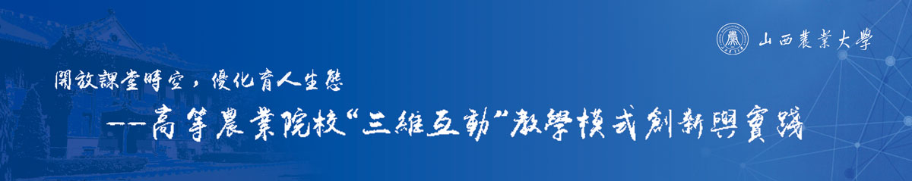

国家级教学成果奖
申报
National award in teaching achievement

首页
成果简介
曾获奖励
主要解决问题
解决方法
成果创新点
推广应用效果
主要完成人
相关成果
成果视频
成果获奖
成果鉴定证明
理论研究成果
学生授权专利
学生代表性论文
研究实践
历年探索主题
实践环节图展
教学模式示例
学生作品摘编
育人效应
学生反响
应用评价
媒体报道
人大建言
推荐鉴定意见
总结报告
栏目导航
曾获奖励
主要解决问题
解决方法
成果创新点
推广应用效果
曾获奖励
获奖类别
获奖等级
获奖成果名称
授奖单位
获奖年度
1
山西省教学成果奖
特等奖
农业院校“三维互动”教学模式的实践探索与理论研究
山西省教育厅
2018
2
山西省教学成果奖
一等奖
“三课堂”资源整合育人与推广研究
山西省教育厅
2017
3
山西省教学成果奖
二等奖
农林院校昆虫学课程互动性双语教学体系与方法的改革与实践
山西省教育厅
2012
4
山西省教学成果奖
二等奖
农科大学“研究性学习”教学新模式的构建与实践
山西省人民政府
2008
5
山西省教学成果奖
二等奖
大学交互性教学的理论与实践
山西省人民政府
2007
6
全国就业创业优秀个人
国家级
全国就业创业优秀个人，黄超
中华人民共和国国务院
2012
7
中国大学生年度人物
国家级
第十届中国大学生年度人物，马红军
中宣部教育部共青团中央
2015
8
中国大学生“自强之星”
国家级
中国大学生“自强之星”，马红军
共青团中央全国学联
2015
9
中国科教影视“科蕾奖”
国家级
中国科教影视“科蕾奖”三等奖
国家新闻出版广电总局中国科教电影电视协会
2013
10
全国科普讲解大赛
国家级
全国科普讲解大赛优秀奖，李柔辰
科学技术部
2017
11
中国青年涉农产业创业创富大赛
国家级
中国青年涉农产业创业创富大赛创意组，优秀奖
共青团中央
2014
12
国家特色专业
国家级
植物保护/农学
教育部
2010
13
卓越农林人才培养计划
国家级
植物保护/农学
教育部
2014
14
实验教学示范中心
国家级
植物生产类实验教学中心
教育部
2013
15
山西省精品资源共享课
省级
《普通昆虫学》
山西省教育厅
2013
16
山西省精品课程
省级
《普通昆虫学》
山西省教育厅
2009
17
山西省优秀教学团队
省级
植物保护
山西省教育厅
2009
18
教育部新世纪优秀人才
国家级
教育部新世纪优秀人才，马瑞燕
教育部
2008
19
山西省“十佳教师”
省级
山西省第十一届育人杯“十佳教师”，马瑞燕
山西省总工会
2011
20
山西省教学名师
省级
山西省教学名师，马瑞燕
山西省教育厅
2010
 国家级教学成果奖申报National award in teaching achievement
国家级教学成果奖申报National award in teaching achievement 山西省太谷县铭贤南路1号 030801
山西省太谷县铭贤南路1号 030801 0354-6286568
0354-6286568 swhd@sxau.edu.cn
swhd@sxau.edu.cn